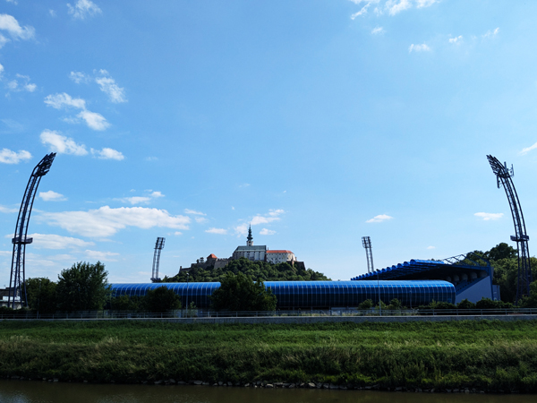
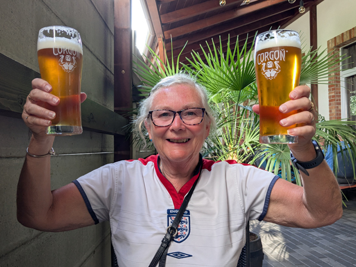
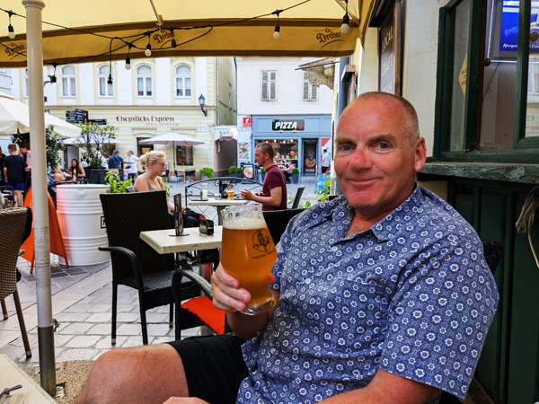
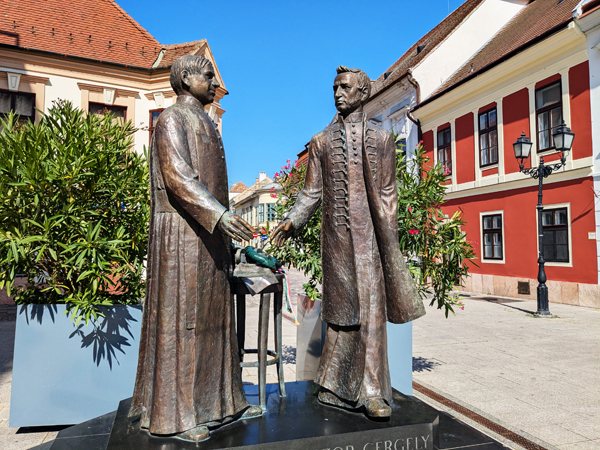
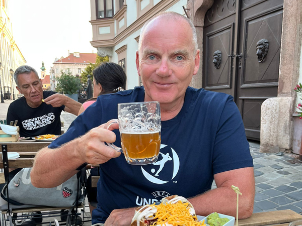
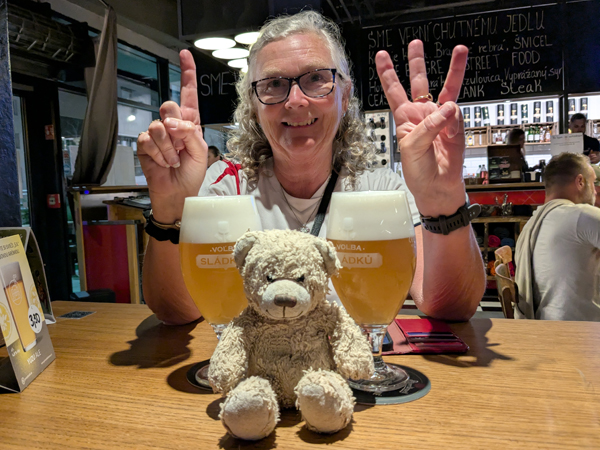

Sunday 15th June - England U21 v Slovenia U21 We got up, had a few trips to get everything to the car and left the apartment just after 10:00. We drove out of Komárno and started heading North towards Nitra where England will play there next two games. We stopped at a Tesco to buy breakfast and ate it at a particularly un-scenic picnic spot.
The driving part of the journey took just over an hour and we found our apartment shortly after midday. The apartment is about half an hours walk from the centre but is very nice and will be ideal for the next four nights. Steve came up with us but is staying the other side of town. He headed off to find his apartment while we were unloading the car.
After getting everything into the apartment, we finished yesterdays pizza and then headed into town. We had a walk round the football ground and then started looking for a pub. We were taking photos of the Nitra Gallery when we spotted Agaty Pub. This was one of the craft beer pubs I had thought about going to anyway and it had a very nice looking beer garden so we went in and got a table. We stayed in there until it was time to go to the game. Steve joined us and there were plenty of other England fans in there as well. For the first time since we have been going to the Under 21 tournaments, there were a lot more England fans around than fans of our opponents and we were not going to be out-numbered.

We left the pub at 5:30 for a 6:00 kick-off. The ground was only a 10 minute walk away. It had been very hot all day and it was still far too warm to play football by this time. We had very good seats near the halfway line but were unfortunately in the sun for the whole game. The game was no-where near as good as the one on Thursday but a point should be enough to get us through to the quarter-finals.
After the game we walked back to the centre. We struggled to find anywhere with good beer that was also serving food so after one drink in ZanziBar, we went and bought kebabs. We then had an enjoyable few hours in Beer Time before walking back to the apartment. Got back just before 1am.
Monday 16th June For the first time since leaving home, we had a couple of days without a lot to do. We are staying in the same place until after England's final group game here on Wednesday. We had arranged to go down to Steve's apartment in the centre of town for breakfast and we cycled down there when our washing machine had finally finished.
There are not too many sights in Nitra but it does have a castle on a hill fairly close to the centre. After eating, we walked to the base of the hill next to Agaty Pub and climbed the slope up to the top. At the top there were a castle with a small cathedral in it. Nothing quite on the scale of Carcassone but it was all nice enough and it was worth walking up for the views of the city and football ground.

We walked back down and wandered through the pedestrianised area and back to Steve's looking at a couple of restaurants on the way. We arranged to meet up again later and then Roz and I cycled back up to our apartment.
After showers, we walked back into town. We met Steve at Beer Time and proceeded to get quite pissed very quickly. The 6% IPA was probably the nicest beer we have had in Slovakia and it went down very easily. Neither of us had eaten much today and so drinking strong beer at that speed was never going to end well. After a few drinks we headed to Ristorante Boccaccio, an Italian restaurant we had looked in earlier.
This had looked a very nice place to eat and the food was very good. However, the service was as bad as anywhere I can remember eating. It took ages for them to bring anything and Roz's pizza appeared after Steve and I had finished eating. We did get free drinks from them and Roz got to take away her pizza without paying for it which just about made up for it all. It was still quite an enjoyable meal. We had got through a couple of bottles of wine by the time we had finished which added to the drunkenness.
We went for another couple of drinks in Beer Time and then left Steve chatting to a local couple. We managed to order a Bolt taxi to get us back home and got back at about 10:45.
Tuesday 17th June Woke up to discover that Ollie was missing and it looked as if he had been left in Komárno. A sad start to the day. We spent the best part of an hour searching the room and the car before having breakfast. Apart from another load of washing we did not really do a lot for the rest of the morning.
At about 2pm we went out on our bikes for a couple of hours. The cycle routes here are not quite as good as the ones along The Danube but they were OK and it was nice enough cycling along The Nitra. We gave up when the path got very rough and came back and did a few more miles around Nitra itself. This gave us good views of the football ground with the castle in the background with the bonus of an enclosure filled with goats and reindeer to look. It was a relatively easy ride of 18.6 miles

Back in the room and Ollie appeared in the pocket of the shorts I was wearing last night. No idea how he got there but we were both very relieved to see him again. We walked back down the hill and went to the Tesco in the shopping centre before returning to the apartment.
We could not be bothered to walk back into town this evening. Instead we sat outside the apartment and ate the pizza that Roz ordered last night. I went for another walk to complete my steps but it was a quiet, early night.
Wednesday 18th June - England U21 v Germany U21 We were up a bit earlier this morning. After breakfast we went back out on our bikes again. We headed North along the Nitra today. As with yesterday, the cycle paths varied between very good and non-existent. We were trying to get to Výčapy-Opatovce about ten miles away but gave up when the path deteriorated too much. We returned to Nitra to see the reindeer again and then did a few more miles on the Southern section of the path. We returned to the room stopping at Tesco again to get a few things for lunch. It was another easy ride, this time we managed 23.4 miles.
We were back in the apartment by midday and had another few hours of not doing much. We had lunch and looked into a few options for the next ten days or so. We did not know if we would leave Slovakia as soon as England got knocked out but we will now probably stay until the end of the tournament regardless of what happens. We are planning on doing some more cycling on The Danube so that by the time we leave, we will have completed the whole of the Vienna to Budapest section, albeit in a rather disjointed way. We also have tickets for both quarter-finals and the final. Although the tickets were cheap, we may as well go to the games and have a few days in Bratislava before heading back to Germany.
At 3:30, we walked back into town for England's final group game. I did not think it was a good idea to start on the 6% IPA five hours before kick-off so we resisted the temptation to go back to Beer Time and tried a few other places instead. We went to Černá Hora another craft beer pub first. This was probably not as good as Beer Time but the beer was still good. We had a few in there and then walked to Brick Pub where we had planned to eat. We waited for Phil to arrive and then tried to order food but were told that there would be a two hour wait. A large group had ordered ahead of us and as with a couple of days ago it seemed that they were unable to cope with such things.

We decided not to wait and after finishing our beers found Bistro Šmak where we were able to get food. We were joined by Steve (who is on the bus from Bratislava again) and stayed drinking in there until it was time to walk to the ground.
The game was quite enjoyable despite the fact that we lost to the Germans. The result did not really matter due to the score from the other game and England played reasonably well in the second half. The result meant that we have made it to the quarter-finals and finishing second in the group means we have a lot less driving to do if we get to the semis.
After the game we walked straight back to the apartment. Once we were back, we bought tickets for the semi-final in Bratislava so whatever happens now, we have tickets for all of England's games and will not have to go through what happened in Batumi again!
Thursday 19th June - East from Győr - 28.6 miles 296 ft We loaded up the car and left the apartment at 10:00. We had a drive of about 1 hour 50 minutes to our next stop, Győr on the Hungarian side of The Danube. We found the Ibis and checked in by midday.
We went straight out for a walk around the town. As with everywhere else we have been to on the trip so far, it was a town that neither of us had visited before. On our first look around, it appeared to be another very nice place. We had a quick walk round the old centre and then returned to the hotel for lunch.
One of the reasons for coming to Győr was to complete some more of the Danube cycle route. We headed off at about 3pm and went towards Komárno. Last week we had come along the same route from Komárno. Today we went along the route until we came to the point where we had turned round last week meaning we have completed the entire section. Again it was a fairly easy round trip, this time about 28 miles, although Roz was struggling with her back by the end of the ride
After showering, we went down for our free drink and then walked back into town. We went for a drink at Sörpatika, another craft beer bar with a very nice IPA and then started looking for somewhere to eat. This proved to be harder than expected. A place that we liked the look of earlier had already closed as had a lot of other restaurants. There were plenty of places doing pizzas, kebabs or burgers and plenty of bars not serving food but there was not anything we really liked the look of.

We ended up at The John Bull Pub. We would normally avoid this sort of place but although the inside was like an English pub, the outside was a very nice place to sit. We both had prawn pasta dishes which were excellent together with a nice bottle of local wine. A very enjoyable meal. After eating, we had a couple of drinks in another bar - Kis Bohém - before walking back to the hotel.
Friday 20th June - - North-West from Győr - 52.1 miles 160 ft We were up by 9ish and went straight out on our bikes to complete another part of the route between Bratislava and Budapest. We are staying about 50 miles from Bratislava and wanted to try and do about half the route. The plan was to do the other half from the other end next week. We bought breakfast from Lidl, ate it in the main square and were on our way out of Győr by about 10:00.
After about 15 miles, Roz wanted to stop for a rest and was not planning on going much further so I carried on on my own. I made it as far as Mosonmagyaróvár before turning round and Roz got as far as Arak. I caught up with her on the way back and we did the last 8 miles back into Győr together.

We had lunch in the hotel and then walked back into the centre for ice-creams. We were back in the hotel by 5:30.
We went out again at 7. Last night on our way back to the hotel we had walked back past Guri Serház, another craft beer bar. This had looked very good but was just closing as we came past. We went there first and ended up spending most of the evening there. Their beer was very good and we noticed other people eating food from the Mexican restaurant over the road. After last night we deiced this would be a good idea.

We ordered from the Mexican and, after a bit of confusion were told to go and sit outside the restaurant but were able to take our beers with us. Not a particularly Hungarian experience but the food was excellent. We crossed back to the bar for another drink after eating. We left there and went back to where we were last night. We had one more drink in Sörpatika. We were going to have another in Kis Bohém but the music was too loud so we gave up and walked home.
Saturday 21st June - Spain U21 v England U21 We left The Ibis just before 10 and drove out of Győr towards Arak where Roz had cycled to yesterday. We had a few hours to kill so we thought we may as well do a few more miles of our cycle route. We left the car in Arak and cycled as far as Rajka about 15 miles away. Here, I turned round and went back to get the car. Roz did a few more miles and made it as far as the Slovak border before going back to Rajka. I then drove to pick her up.
From Rajka, we crossed the border and had a journey of just under an hour to Trnava. We found our apartment and managed to get into the car park before letting ourselves in. We went over the road to buy lunch from Lidl and ate it in the apartment.
We went out again at 4:30 and went for a quick look round the town before starting on our pre-match drinks. We went first to the bar right next to the ground - Piváreň a reštaurácia Bokovka. This had looked an awful place when we were here last time as it was packed with England fans. However, today it was actually a micro-brewery with very good beer. We had a couple in there before moving to Grand Beer Pezinská. I had thought this was where we were drinking on our previous visit but it was somewhere completely different. However, it also had good beer. Phil joined us in there and we all had meals and a few beers before heading to the ground, five minutes away.

Todays game was the best of the tournament so far. Spain were the favourites to win the tournament and we beat them relatively comfortably in the end. We will now play the Dutch in the semi-final in Bratislava on Wednesday. After the game we returned to the bar at the ground and stayed in there until it closed at 1am.